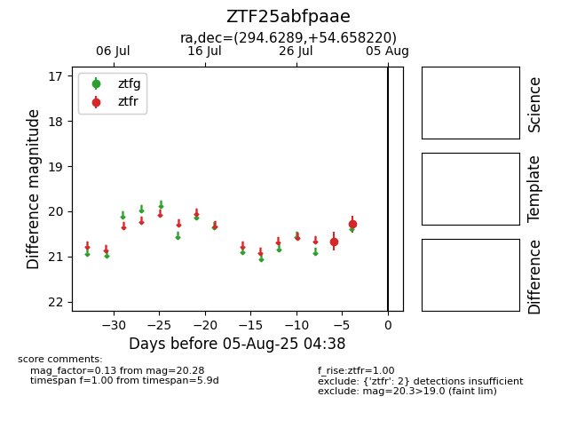

Target ZTF25abfpaae at 2025-08-05 04:38, see:
FINK: fink-portal.org/ZTF25abfpaae
Lasair: lasair-ztf.lsst.ac.uk/objects/ZTF25abfpaae
ALeRCE: alerce.online/object/ZTF25abfpaae
alt names
ZTF25abfpaae (ztf,fink)
coordinates:
equatorial (ra, dec) = (294.6289,+54.65822)
galactic (l, b) = (86.9440,+15.48254)
photometry
last ztfr=20.28
2 ztfr detections
